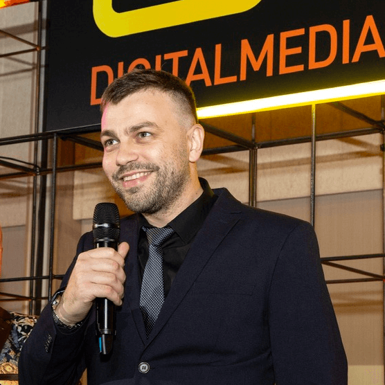

Iulian Grecu

AWARD-WINNING DIGITAL MARKETER
CRAFTING PPC & ANALYTICS @
WOLFGANG DIGITAL
LinkedIn
Twitter
Articles
Email
×
My latest articles:
Articles in English:
Why the new Google tag is a game changer for your Google Ads results
-
Wolfgang Digital
, Oct 2022
Optimize your digital marketing campaigns for customers, not just leads
-
Wolfgang Digital
, Apr 2022
Everything you need to know about Cookie Consent
-
Wolfgang Digital
, Aug 2021
GA4 - The Future of Web Tracking & Analytics
-
Wolfgang Digital
, Jan 2021
Local Services Ads available in Ireland
-
Wolfgang Digital
, Dec 2020
Lead Generation Tracking: Filling In The Data Gaps
-
Wolfgang Digital
, May 2018
Facebook’s new feature allows businesses to recruit through Facebook Jobs
-
Zitec Blog
, Mar 2017
Articles in Romanian:
Şapte trenduri digitale în 2017
-
BusinessMagazin.ro
, Martie 2017
Cinci lucruri de ştiut înainte de lansarea unui magazin online
-
BusinessMagazin.ro
, Iulie 2016
10 sfaturi pentru detinatorii de business-uri eCommerce
-
Wall-Street.ro
, Aprilie 2016
Tehnici simple pentru Optimizarea Ratei de Conversie
-
Web-Consulting.ro
, Ianuarie 2014
Procesul SEO - De la Research si Analiza la Tracking si Ranking
-
Web-Consulting.ro
, Iulie 2013
SEO vs SEM vs Social Media - Ce metoda de promovare online functioneaza mai bine pentru afacerea dvs?
- Jan 2012
Ghid complet: Cum vindem si cum ne promovam afacerea online?
- Nov 2011
LinkedIn Twitter Articles Email